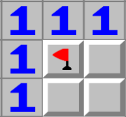

Although its first appearance on a Windows machine was in 1980, MineSweeper, continues to confuse and intrigue players around the world.
The rules can certainly come off as daunting, but once you see how it all comes together, you'll wonder how you went so long without knowing it.
In brief, this tutorial will walk you through how to play MineSweeper and provide a couple tricks to get you defusing on the right foot.
MineSweeper consists of a sea of tiles. Each tile hides a space containing one of 3 things: a number, a blank space, or a mine.
If you click on a mine, the game is over!
Number Spaces
A number spaces denotes how many spaces adjacent to that one contain a mine. For the example below, the "1" means that one and only one of the 8 surrounding tiles is concealing a mine.
Blank Spaces
A blank space indicates that there are no mines adjacent to the given space.
Clicking a tile over a blank space not only reveals every adjacent blank space to that tile, but also every number space adjacent to the new blank spaces! (bear with me, you'll see what I mean!)
This makes finding blank spaces invaluable!
Mine Spaces
Mine spaces are scattered all over the playfield. The number in the top right indicates how many undiscovered mines are left in the field.
Flagging tiles you are convinced are mines decreases the counter.
To flag/unflag a mine simply left-click on a tile. Flagging a mine prevents the tile from being selected.
Try not to flag tiles that you can't be certain are mines!
Try it out:
Now that you've mastered the basics, let's take a peak at a couple basic strategies.
Often you will see areas similar to the one pictured below. In other words, a space with a "1" that only has one covered tile adjacent to it. These spaces are definitely mines.
Likewise if you have a space with a "2" in an arranged such as below. You can flag the tile right below it (marked with a superscript 2) aswell, as it is definitely a mine.

The above rule can be applied to any number of cascading sequential mine blocks as seen below.

Now that you have the gist of MineSweeper, go ahead and close the help window and start sweeping!